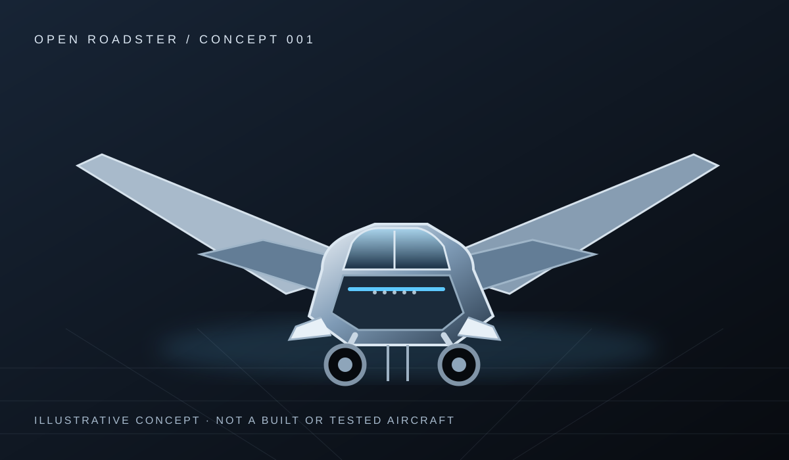

Open by design
Public research, documented decisions, and a contribution process people can inspect.
AN OPEN ENGINEERING INITIATIVE
A global community exploring a two-seat roadable aircraft — one open engineering decision at a time.
JOIN THE FOUNDING COMMUNITYCONCEPT STAGE · NOT A COMPLETED OR FLIGHT-TESTED AIRCRAFT

THE MISSION
We are investigating what it would take to combine road transportation and flight in a two-seat vehicle. Requirements, assumptions, research, and decisions will be shared openly so qualified people can challenge and improve the work.
Public research, documented decisions, and a contribution process people can inspect.
Concept visuals are not flight tests. Every claim must match available evidence.
Qualified review and a defensible test plan come before physical flight milestones.
THE ROADMAP
Requirements and regulatory research.
Architecture trade study and feasibility review.
Reviewed analysis, hazards, and test planning.
Only if justified by evidence, resources, and safe oversight.
JOIN THE FOUNDING COMMUNITY
We are preparing the signup service. Until the verified waitlist is connected, use GitHub to follow the project or volunteer for a research issue.
Email signup is not live yet. We will publish the form here once submissions and privacy controls are tested.